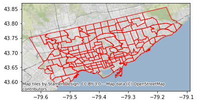

Toronto Data#
This notebook documents the compilation of the Toronto datasets provided for the Computational Essay.
import pandas
import geopandas
import contextily
Toronto Neighbourhoods#
Geometries#
Neighbourhood geometries are available from the Toronto Open Data portal (URL).
url = ("https://ckan0.cf.opendata.inter.prod-toronto.ca/"\
"download_resource/a083c865-6d60-4d1d-b6c6-b0c8a85f9c15"\
"?format=geojson&projection=4326")
geoms = geopandas.read_file(url)
url
'https://ckan0.cf.opendata.inter.prod-toronto.ca/download_resource/a083c865-6d60-4d1d-b6c6-b0c8a85f9c15?format=geojson&projection=4326'
ax = geoms.plot(facecolor="none", edgecolor="red")
contextily.add_basemap(ax, crs=geoms.crs)

Socio-economic characteristics#
Also from the Toronto Open Data Portal, we use the Neighbourhood Profiles data product.
url = ("https://ckan0.cf.opendata.inter.prod-toronto.ca/"\
"download_resource/ef0239b1-832b-4d0b-a1f3-4153e53b189e"\
"?format=csv")
np_all = pandas.read_csv(url)
url
'https://ckan0.cf.opendata.inter.prod-toronto.ca/download_resource/ef0239b1-832b-4d0b-a1f3-4153e53b189e?format=csv'
After inspection, we subset the following variables:
vars_to_keep = {
3: "population2016",
8: "population_sqkm",
10: "pop_0-14_yearsold",
11: "pop_15-24_yearsold",
12: "pop_25-54_yearsold",
13: "pop_55-64_yearsold",
14: "pop_65+_yearsold",
15: "pop_85+_yearsold",
1018: "hh_median_income2015",
1149: "canadian_citizens",
1711: "deg_bachelor",
1713: "deg_medics",
1714: "deg_phd",
1887: "employed",
1636: "bedrooms_0",
1637: "bedrooms_1",
1638: "bedrooms_2",
1639: "bedrooms_3",
1641: "bedrooms_4+",
}
np = np_all.set_index("_id").loc[vars_to_keep.keys(), :]
meta = np.assign(name=pandas.Series(vars_to_keep))\
.reset_index()[["_id",
"name",
"Category",
"Topic",
"Data Source",
"Characteristic"
]]
np_renamed = np.loc[:, "Agincourt North":]\
.T\
.rename(columns=vars_to_keep)\
.reset_index()\
.rename(columns={"index": "neighbourhood_name"})
Consolidation#
name_parser = lambda s: " ".join(s.split(" ")[:-1])\
.replace("St.James", "St. James")\
.replace("Pellam", "Pelham")
numerify = lambda s: float(s.replace(",", ""))
db = geoms.loc[:, ["_id", "AREA_NAME", "Shape__Area", "geometry"]]\
.assign(neighbourhood_name=geoms["AREA_NAME"].apply(name_parser))\
.join(np_renamed.set_index("neighbourhood_name"), on="neighbourhood_name")
db.loc[:, "population2016":] = db.loc[:, "population2016":].apply(lambda s: s.map(numerify))
db.info()
<class 'geopandas.geodataframe.GeoDataFrame'>
RangeIndex: 140 entries, 0 to 139
Data columns (total 24 columns):
# Column Non-Null Count Dtype
--- ------ -------------- -----
0 _id 140 non-null int64
1 AREA_NAME 140 non-null object
2 Shape__Area 140 non-null float64
3 geometry 140 non-null geometry
4 neighbourhood_name 140 non-null object
5 population2016 140 non-null float64
6 population_sqkm 140 non-null float64
7 pop_0-14_yearsold 140 non-null float64
8 pop_15-24_yearsold 140 non-null float64
9 pop_25-54_yearsold 140 non-null float64
10 pop_55-64_yearsold 140 non-null float64
11 pop_65+_yearsold 140 non-null float64
12 pop_85+_yearsold 140 non-null float64
13 hh_median_income2015 140 non-null float64
14 canadian_citizens 140 non-null float64
15 deg_bachelor 140 non-null float64
16 deg_medics 140 non-null float64
17 deg_phd 140 non-null float64
18 employed 140 non-null float64
19 bedrooms_0 140 non-null float64
20 bedrooms_1 140 non-null float64
21 bedrooms_2 140 non-null float64
22 bedrooms_3 140 non-null float64
23 bedrooms_4+ 140 non-null float64
dtypes: float64(20), geometry(1), int64(1), object(2)
memory usage: 26.4+ KB
Write out#
! rm -f toronto_socio-economic.gpkg toronto_socio-economic_vars.csv
db.to_file("toronto_socio-economic.gpkg", driver="GPKG")
meta.to_csv("toronto_socio-economic_vars.csv", index=False)
Toronto Yahoo images#
This is a subsample of the 100 million Yahoo dataset for the Toronto bounding box.
NOTE - The code below requires the dataset to be chunked in parquet files, and available to the notebook.
import dask.dataframe as dd
from numpy.random import seed
Bounding box coordinates:
w, s, e, n = -79.63926493, 43.580996 , -79.1154515 , 43.85545719
Connect to dataset:
db = dd.read_parquet("yfcc_chunk_*.parquet")
Query to extract Toronto:
tnt = db.loc[(db["longitude"] > w) & \
(db["longitude"] < e) & \
(db["latitude"] < n) & \
(db["latitude"] > s),
:]
Computation to extract Toronto:
sample = tnt.compute()
This contains almost a quarter of a million images, so we pick a random subset of 2,000:
seed(1234)
subsample = sample.sample(2000)
Write it out to a .csv file:
subsample.to_csv("toronto_flickr_subset.csv")